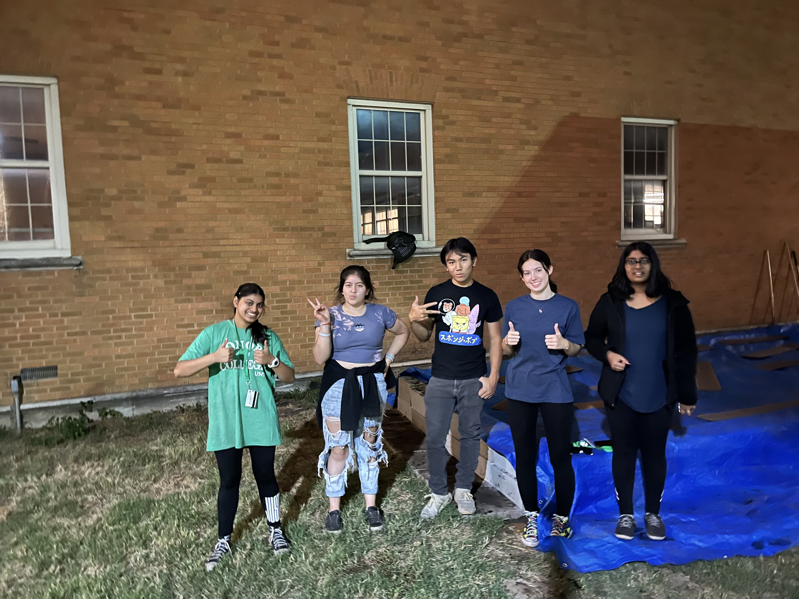

TAMS Gardening Club
At the Texas Academy of Mathematics and Science, I worked as a committee head for the TAMS Gardening Club, where we would create a community garden. Growing up, my mom would constantly tend to her garden at home. She grew up on a grape farm in Ukraine and brought many of her skills over to America. I picked up on some of her gardening tricks as I watched her, learning about the different conditions and methods to grow certain plants. Whenever I saw an opportunity to lead a new gardening club, I applied and got accepted. During my time here, my team and I drafted plans for a raised garden bed, worked out logistics and cost, and began working on creating the bed. We hosted volunteer sessions where people would collaborate to build the bed, along with teaching others about the basics of gardening. At the end of the year, we were able to grow many herbs and vegetables, including cilantro and carrots. I found this opportunity to not only be a great bonding experience for my community, but also an opportunity to learn about a hobby that runs down my family.
Intellichoice
Intellichoice is a program hosted at the Texas Academy of Mathematics and Science that tutors K-12 Students on various STEM subjects. Students work on Khan Academy through Zoom, where we teach students under parental permission. I would often work with kids in middle school and teach them introductory algebra. Through this program, the Intellichoice volunteers and team were able to help the kids increase their grades by 10%.
Outreach Coordinator
I worked as a Outreach Coordinator under the TAMS Ambassadors club. In this position, I was tasked with contacting underprivileged communities in Texas to teach others about the TAMS program. I was interested in volunteering in this program, as I only found out about the program from a close relative and the program can be great for many who want to advance their education early. Through this program, we were able to contact over 50 different schools and promote our program.